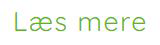
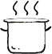
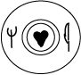

| Ikon | Hvor på siden? |
|---|---|
| Bruges som en knap til at læse mere om noget. | |
| Burgermenu/sidemenu | |
| Bruges til SoMe for kontakt. | |
|  | Knap bliver anvendt på index-siden til, at man kan læse mere. |
| Knap til CTA. | |
| Ses på de steder hvor det kræver opmærksomhed. | |
|  | Bruges til siden for tilberedning. |
|  | Kommer frem ved filtrering af mad. |
| Bruges til de steder hvor der er informationer om temperature. | |
| Bruges som et klokke til at vise der er snak om tid. |